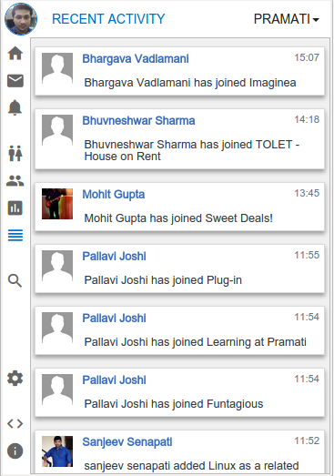

The best way to stay active on Yammer.
All Yammer goodies in a Chrome plugin
-
Network Feeds at one place
Shows the most recent network feeds from the company. Top feeds and the feeds from your groups are also listed here.

-
Personalized Messages
You can view all the personal messages with a click of button.

-
Notifications
Checkout all the notifications related to you.

-
People
See all the poeple in the organisation.
-
Groups
All the groups listed at one place.

-
Recent Activity
Checkout all the recent activities in the organization.
 -
Search
Most importantly you can search messages or users.